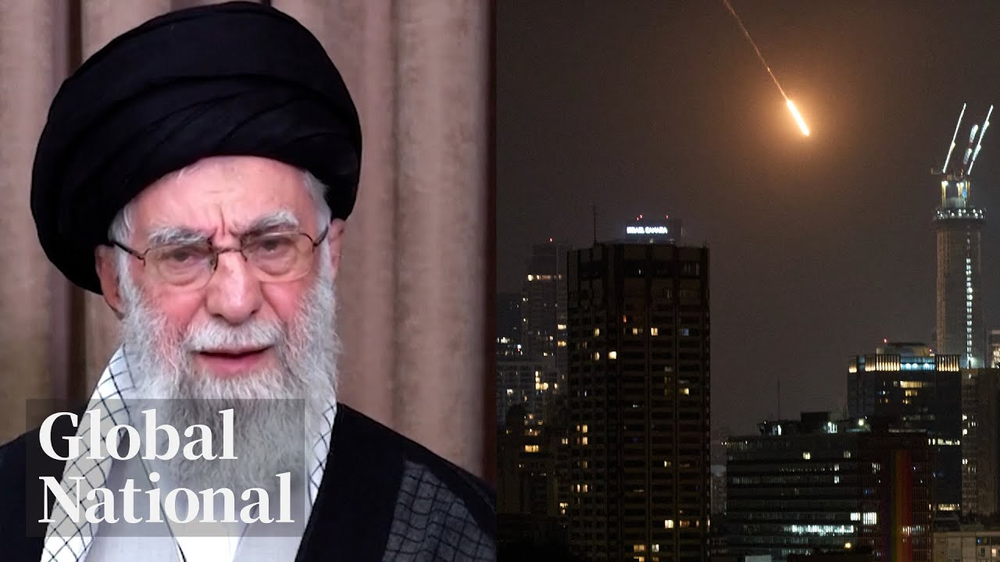

【Global News：伊朗对以色列发动报复性导弹和无人机袭击 2025-06-13】
Summary: Tensions escalate as Iran retaliates against Israeli strikes, targeting military and nuclear sites, while international calls for calm grow. The conflict overshadows G7 discussions, and wildfires ravage Canadian communities.
摘要： 伊朗对以色列的军事和核设施发动报复性袭击，紧张局势升级，国际社会呼吁保持冷静。这一冲突影响了G7会议的讨论，同时野火肆虐加拿大社区。

⏱️ Estimated Reading Time: 35 min
📚 六级生词 📚 雅思生词 📚 托福生词 📚 专八生词 📚 SAT生词 📚 考研生词 📚 GRE生词 📚 高考生词
[Music] Israel and Iran attacking each other this Friday night.
[音乐] 以色列和伊朗在这个周五晚上互相攻击。
Iran's retaliatory strikes hours after Israel's sweeping attacks, targeting Thrron's generals and nuclear facilities.
以色列发动全面袭击几小时后，伊朗实施报复性打击，目标是伊朗的将军和核设施。
This operation will continue for as many days as it takes.
这次行动将持续所需的天数。
The Israeli prime minister's endgame and the international calls for calm.
以色列总理的最终目标以及国际社会呼吁保持冷静。
Agony after the Air India plane crash.
印度航空公司飞机坠毁后的痛苦。
The grief of families as the aircraft's sole survivor speaks out.
飞机唯一幸存者发声时家人的悲痛。
Plus, a closer look at areas ravaged by wildfires in the prairies.
此外，近距离观察草原地区被野火摧毁的区域。
The communities on edge as evacuees return home.
随着撤离者返回家园，社区处于紧张状态。
And keeping heritage afloat.
以及保护文化遗产。
They need to stay working to stay home.
他们需要继续工作以留在家乡。
The group saving Nova Scotia's historic schooners.
拯救新斯科舍省历史悠久的纵帆船的团体。
Global National with Donna Frieza.
全球国家，唐娜·弗里泽主持。
Israel came under attack tonight.
以色列今晚遭到袭击。
Iran launching ballistic missiles at multiple targets.
伊朗向多个目标发射弹道导弹。
Some, but not all, have been intercepted by Israel's Iron Dome defense system.
部分导弹被以色列的铁穹防御系统拦截，但并非全部。
Israel says some civilians have been injured.
以色列表示一些平民受伤。
And Iran supreme leader says this is just the beginning of the retribution.
伊朗最高领袖表示这只是报复的开始。
Israel Ayatollah Ali Kamani says has made a big mistake, a grave error, and committed a reckless act.
伊朗最高领袖阿亚图拉·阿里·卡梅尼表示以色列犯了大错，严重错误，并采取了鲁莽行动。
The consequences of this, he says, will bring that regime to ruin.
他表示，这后果将使该政权走向毁灭。
Good evening and thanks for joining us.
晚上好，感谢加入我们。
The Middle East is on edge tonight.
今晚中东局势紧张。
Israel launched its most brazen and far-reaching attack on Iran, hitting nuclear and military targets, but also airports and residential areas.
以色列对伊朗发动了最大胆和影响深远的袭击，打击了核和军事目标，还包括机场和居民区。
According to Iranian state media, at least 78 Iranians have been killed, including three top generals and several nuclear scientists.
据伊朗官方媒体报道，至少78名伊朗人死亡，包括三名高级将领和几名核科学家。
Israel's prime minister, who ordered the attack, says he's destroying Iran's nuclear capability and long range missiles.
下令袭击的以色列总理表示，他正在摧毁伊朗的核能力和远程导弹。
And in a message to the Iranian people, Benjamin Netanyahu, hinted at regime change.
本杰明·内塔尼亚胡在向伊朗人民传达的信息中暗示了政权更迭。
Our fight is not with you.
我们的斗争不是针对你们。
Our fight is with the brutal dictatorship that has oppressed you.
我们的斗争是针对压迫你们的残暴独裁政权。
And as we achieve our objectives, we're also clearing the path for you to achieve your objective, which is freedom.
在我们实现目标的同时，我们也在为你们实现自由的目标扫清道路。
Netanyahu vows the strikes will continue for as many days as it takes to remove what he calls an existential threat to Israel.
内塔尼亚胡誓言，袭击将持续所需的天数，以消除他所说的对以色列的生存威胁。
Redmond Shannon begins our coverage tonight.
雷德蒙·香农今晚开始我们的报道。
[Music] Iranian ballistic missiles, some of them piercing Israel's missile defense, hitting Tel Aviv, the country's economic hub.
[音乐] 伊朗的弹道导弹，部分突破了以色列的导弹防御系统，击中了该国的经济中心特拉维夫。
A retaliation that Israel knew was coming, just not the timing.
以色列知道会遭到报复，只是不知道时间。
Are in a very good The alert suspended an Israeli military press briefing.
警报暂停了以色列军方的新闻发布会。
The Iranian attack, a response to two waves of Israeli strikes on Iran in 24 hours, including on one of Iran's biggest nuclear facilities, a site which Israel claims is being used to develop nuclear weapons.
伊朗的袭击是对以色列24小时内对伊朗发动两波袭击的回应，包括对伊朗最大的核设施之一的袭击，以色列声称该设施被用于开发核武器。
Israel's military says it has hit hundreds of targets in Iran with more strikes promised.
以色列军方表示已击中伊朗数百个目标，并承诺发动更多袭击。
The US-based Institute for the Study of War says it has confirmed strikes in locations across the northwest of the country with further reports of explosions across an even wider area.
总部位于美国的战争研究所表示，已确认在该国西北部多个地点发生袭击，并有更广泛区域的爆炸报告。
The Israeli strikes also targeted and killed top military figures including Hussein Salami, the head of the Islamic Revolutionary Guards and the Armed Forces Chief Muhammad Begi.
以色列的袭击还针对并杀死了包括伊斯兰革命卫队负责人侯赛因·萨拉米和武装部队总参谋长穆罕默德·贝吉在内的高级军事人物。
Iran says six of its top nuclear scientists have been killed.
伊朗表示六名顶级核科学家被杀。
State media reported that civilians were among the dead and that Iran has captured a female Israeli pilot whose aircraft was shot down.
官方媒体报道称，死者中有平民，伊朗还抓获了一名飞机被击落的以色列女飞行员。
Israel calls its strikes a preemptive attack with Prime Minister Benjamin Netanyahu appealing to the Iranian people as he has done before.
以色列称其袭击为预防性攻击，总理本杰明·内塔尼亚胡像以前一样向伊朗人民发出呼吁。
Our fight is with our common enemy, a murderous regime.
我们的斗争是针对我们共同的敌人，一个残暴的政权。
Iran's Supreme Leader Ayatala Ali Kam said, "Israel started this war. We will not allow them to walk away unscathed."
伊朗最高领袖阿亚图拉·阿里·卡梅表示：“以色列发动了这场战争。我们不会让他们毫发无损地离开。”
At a meeting of the United Nations Security Council, the head of the International Atomic Energy Agency, Raphael Graci, said radioactivity outside the nuclear plant that was hit remains at normal levels, but he is urging those sites not be targeted.
在联合国安理会的一次会议上，国际原子能机构总干事拉斐尔·格罗西表示，被击中的核电站外的放射性水平仍处于正常水平，但他敦促不要针对这些地点。
Donna Redmond, thanks.
唐娜·雷德蒙，谢谢。
With me from Tel Aviv is Alexander Cornwell from the Reuters News Service.
来自路透社的亚历山大·康威尔在特拉维夫与我连线。
Alexander, describe what it's like there now.
亚历山大，描述一下现在那里的情况。
It looks calm for the moment.
目前看起来平静。
What do you know about the missiles that made it through the Iron Dome?
你对突破铁穹的导弹了解多少？
Yeah, right now it's uh it's relatively calm, but I guess it's hard to overstate the gravity of the situation.
是的，现在相对平静，但我想很难夸大局势的严重性。
Earlier tonight, uh we had Iranian missiles streaking across the the Tel Aviv skyline.
今晚早些时候，我们看到伊朗导弹划过特拉维夫的天际线。
Some of them have made it through the Iron Dome inception, including hitting at least in one area in central Tel Aviv and in the Ramat gun uh neighborhood of Tel Aviv.
其中一些突破了铁穹的拦截，包括至少击中了特拉维夫市中心的一个区域和特拉维夫的拉马特甘社区。
There's reports of several people injured and at least one critical, although so far there's been no reports of any fatalities.
有报道称几人受伤，至少一人情况危急，但到目前为止没有死亡报告。
Do you know what has been hit or what perhaps was targeted?
你知道被击中的是什么或可能是目标吗？
Were these military targets or were they just random and perhaps hit civilian areas?
这些是军事目标还是随机的，可能击中了平民区？
It's not clear what Iran was targeting.
不清楚伊朗的目标是什么。
Uh there are military facilities uh including the defense headquarters in central Tel Aviv.
有军事设施，包括特拉维夫市中心的国防总部。
Uh but the city is also dense and and densely populated.
但这座城市也很密集，人口稠密。
So they they have hit a residential neighborhood uh as I said in Ramadan which uh is not too far from uh train stations and and and other buildings uh large buildings in Tel Aviv.
所以他们击中了一个居民区，就像我说的在拉马丹，那里离特拉维夫的火车站和其他大型建筑不远。
Israel's prime minister has said the attacks on Iran will go as long on as long as needed as he puts it.
以色列总理表示，对伊朗的袭击将持续所需的时间。
What does that mean for Israel and for the Israeli people?
这对以色列和以色列人民意味着什么？
What are they preparing for?
他们在准备什么？
I think we're we're in a period of of uncertainty.
我想我们正处于不确定时期。
And in the meantime, I guess air raid sirens go off and people make a beline for the bomb shelters.
与此同时，我想空袭警报响起，人们直奔防空洞。
That's right.
没错。
So, the the air raid sirens in Tel Aviv started shortly after 9:00 p.m. tonight and the the military had already ordered the public into the shelters.
所以，特拉维夫的空袭警报今晚9点后不久响起，军方已经命令公众进入避难所。
That order has been lifted, but the airport has been closed.
该命令已解除，但机场已关闭。
They we just simply don't know what's coming next.
我们根本不知道接下来会发生什么。
All right.
好的。
All right.
好的。
Well, Alexander Cornwell for now in Tel Aviv, thank you for bringing us up to speed.
那么，目前在特拉维夫的亚历山大·康威尔，感谢你为我们带来最新情况。
Appreciate it.
非常感谢。
The US president says Americans were not involved in the attacks on Iran, though it was warned in advance and continues to support Israel.
美国总统表示美国人没有参与对伊朗的袭击，尽管事先得到警告并继续支持以色列。
On Thursday, Donald Trump publicly opposed a strike on Iran and was urging Iran to reach a deal on nuclear talks that have been underway and were scheduled to resume on Sunday.
周四，唐纳德·特朗普公开反对对伊朗的打击，并敦促伊朗就核谈判达成协议，谈判正在进行中，并计划于周日恢复。
Our Washington bureau chief Jackson Prosco is with me.
我们的华盛顿分社社长杰克逊·普罗斯科与我在一起。
Jackson, what role is the US playing now that this has spiraled into conflict?
杰克逊，现在局势升级为冲突，美国扮演什么角色？
Well, Donna, we understand from the Pentagon that the US is helping to shoot down Iran's retaliatory missiles tonight.
唐娜，我们从五角大楼了解到，美国今晚正在帮助击落伊朗的报复性导弹。
And the US has also moved ships and other military assets into the region to protect American bases and Israel itself.
美国还向该地区调动了舰艇和其他军事资产，以保护美国基地和以色列本身。
As you mentioned, the US says it did not participate directly in Israel strikes on Iran, but US officials were given a clear heads up, and President Donald Trump has made it clear he knew today and yesterday were coming.
正如你提到的，美国表示没有直接参与以色列对伊朗的袭击，但美国官员得到了明确的通知，唐纳德·特朗普总统明确表示他知道今天和昨天会发生什么。
Now, this is a bit surprising because all week long, Trump has insisted there was still room for Iran to agree to a new nuclear deal.
这有点令人惊讶，因为整个星期特朗普都坚持认为伊朗仍有空间同意新的核协议。
And US officials were planning for talks with Iran to take place on Sunday.
美国官员计划周日与伊朗进行会谈。
But earlier today on social media, Trump argued the Israeli strikes should actually bring Iran back to the negotiating table.
但今天早些时候在社交媒体上，特朗普认为以色列的袭击实际上应该让伊朗回到谈判桌前。
He wrote, "Two months ago, I gave Iran a 60-day ultimatum to make a deal. They should have done it. Today is day 61."
他写道：“两个月前，我给伊朗下了60天的最后通牒来达成协议。他们应该做到的。今天是第61天。”
He went on to say, "Now they have perhaps a second chance."
他接着说：“现在他们可能有第二次机会。”
Iran has though called off those nuclear talks, as you mentioned, and experts see little reason why they'd agreed to them.
不过，正如你提到的，伊朗已经取消了这些核谈判，专家们认为他们几乎没有理由同意。
Now look, this is uh politically almost impossible right now to sell in Thran.
现在看，这在德黑兰政治上几乎不可能推销。
You cannot beat beat up a guy uh and then say come and negotiate with me.
你不能打了一个人然后说过来和我谈判。
Um I don't think Iranians uh can or will accept negotiating under these circumstances.
我不认为伊朗人能够或愿意在这种情况下接受谈判。
So, Jackson, given all this uncertainty, is there a risk the US could be drawn directly into the conflict beyond defending Israel?
那么，杰克逊，鉴于所有这些不确定性，美国是否有被直接卷入冲突的风险，而不仅仅是保卫以色列？
Well, look, we know that Trump has positioned himself as someone who wants to be a peacemaker, someone who says he does not want the US involved in what he calls endless wars in the Middle East.
嗯，我们知道特朗普将自己定位为一个希望成为和平缔造者的人，一个表示不希望美国卷入他所谓的中东无尽战争的人。
But if Iran were to attack a US base or oil facilities or shut down shipping in the region, the US may find itself with no choice but to get involved.
但如果伊朗袭击美国基地或石油设施或关闭该地区的航运，美国可能会发现自己别无选择，只能介入。
We've had a sense all week long that the US is trying to minimize the risk of getting drawn in fully.
我们整个星期都有一种感觉，美国正在试图尽量减少被完全卷入的风险。
You know, first it ordered those non-essential personnel to leave diplomatic and military facilities in the region.
首先，它命令那些非必要人员离开该地区的外交和军事设施。
And last night, as the Israeli attack unfolded, the Secretary of State issued a statement making it very clear that the US was not involved in the attack itself.
昨晚，随着以色列袭击的展开，国务卿发表声明，非常明确地表示美国没有参与袭击本身。
Donna.
唐娜。
Okay, Jackson Prosco in Washington for now.
好的，目前在华盛顿的杰克逊·普罗斯科。
Thank you.
谢谢。
World leaders are asking all parties to avoid escalation.
世界领导人呼吁各方避免升级。
Canadian Prime Minister Mark Carney is urging both sides to exercise maximum restraint and find a diplomatic solution.
加拿大总理马克·卡尼敦促双方保持最大克制，寻找外交解决方案。
In a statement, Carney says Iran's nuclear program has long been a cause of grave concern and its missile attacks across Israel threaten regional peace.
卡尼在一份声明中表示，伊朗的核计划长期以来一直是一个严重关切的问题，其对以色列的导弹袭击威胁地区和平。
He says steps are being taken to protect Canada's nationals and diplomatic missions in the region.
他表示正在采取措施保护加拿大在该地区的国民和外交使团。
The attacks between Israel and Iran will overshadow world leaders who are meeting at the G7 in Alberta.
以色列和伊朗之间的袭击将影响在阿尔伯塔省举行的G7会议的世界领导人。
That summit shared by the Canadian prime minister starts on Sunday.
由加拿大总理主持的峰会将于周日开始。
Our chief political correspondent David Aken has a breakdown of the agenda and how it's changing.
我们的首席政治记者大卫·阿肯对议程及其变化进行了分析。
David?
大卫？
Well, Donna, as with many G7 summits over the years, the host's carefully organized agenda is about to be turned upside down by world events.
唐娜，与多年来许多G7峰会一样，东道主精心组织的议程即将被世界事件颠覆。
In this case, this new conflict between Israel and Iran.
在这种情况下，以色列和伊朗之间的新冲突。
And that conflict along with conflicts in Gaza and Ukraine are sure to feature prominently when G7 leaders gather in Canonascis.
当G7领导人在卡农纳斯基斯聚集时，这场冲突以及加沙和乌克兰的冲突肯定会成为重要议题。
But Carney must also account for a volatile US president.
但卡尼还必须考虑一位多变的美国总统。
The last time Canada hosted a G7 summit in 2018 in Charavo, Quebec, Donald Trump blew it up after getting upset at Justin Trudeau and refused to endorse the leader communique.
上一次加拿大在魁北克夏拉沃主办G7峰会是在2018年，唐纳德·特朗普在对贾斯汀·特鲁多感到不满后破坏了会议，并拒绝签署领导人公报。
It's very hard to control uh how frankly President Trump and the administration are going to manage these meetings.
很难控制特朗普总统和政府如何管理这些会议。
Carney's approach is to forego the traditional 35page G7 communique and instead get leaders to focus on shorter documents, something officials are calling actionoriented joint statements.
卡尼的方法是放弃传统的35页G7公报，而是让领导人专注于更短的文件，官员们称之为以行动为导向的联合声明。
Those joint statements could be on a range of issues such as standing up to China, fighting transnational crime, or harnessing artificial intelligence.
这些联合声明可能涉及一系列问题，例如对抗中国、打击跨国犯罪或利用人工智能。
It's less clear if G7 leaders will be able to reach consensus though on Gaza, on Ukraine, and on the Israel Iran conflict.
目前尚不清楚七国集团领导人是否能在加沙、乌克兰和以色列-伊朗冲突上达成共识。
The United States views Gaza and Ukraine, for example, through a different lens than Canada and other G7 leaders.
例如，美国对加沙和乌克兰的看法与加拿大和其他七国集团领导人不同。
In any event, in areas where there is no G7 consensus, the series of bilaterals or one-on-one meetings that Carney will have will become much more important.
无论如何，在七国集团无法达成共识的领域，卡尼将举行的一系列双边或一对一会议将变得更加重要。
The one thing that Prime Minister Carney can control are the bilaterals, and I think those are key for Canada uh during the summit.
卡尼总理唯一能控制的就是双边会议，我认为这些对加拿大在峰会期间至关重要。
And one of those bilateral meetings is almost certain to be with Donald Trump.
其中一场双边会议几乎肯定会是与唐纳德·特朗普的会晤。
Now, officials on both sides of the bordering are sending out a note of caution.
目前，边境两边的官员都在发出谨慎的信号。
They are saying we should downplay expectations that when Carney and Trump emerge from their meeting in Canadascus, there may not yet be a new Canada US trade deal.
他们表示，我们应该降低预期，卡尼和特朗普在卡纳达斯卡斯会晤后，可能还不会达成新的加美贸易协议。
Donna. Okay, David Aken in Ottawa. Thank you.
唐娜。好的，渥太华的大卫·阿肯。谢谢。
The minister responsible for trade with the US says there are a lot of important issues to work on with Washington, but Dominic Lbel says there's no firm deadline for reaching a deal.
负责与美国贸易的部长表示，与华盛顿有许多重要问题需要解决，但多米尼克·勒布朗表示，达成协议没有明确期限。
Our Ottawa bureau chief Mercedes Stevenson spoke with the minister today. Mercedes Donna.
我们的渥太华分社社长梅赛德斯·史蒂文森今天与部长进行了交谈。梅赛德斯，唐娜。
On the eve of the G7, Canada is not as far down the road in securing a new trade agreement with the Trump administration as the Carney government had hoped.
在七国集团峰会前夕，加拿大在与特朗普政府达成新贸易协议方面的进展不如卡尼政府所希望的那样顺利。
Canada's top negotiator on the file, Canada US Trade Minister Dominic LeBlanc revealed Ottawa has not achieved as much as the Carney government had wanted to ahead of President Trump and Prime Minister Carney's meeting in Cananascis.
加拿大首席谈判代表、加美贸易部长多米尼克·勒布朗透露，渥太华在特朗普总统和卡尼总理在卡纳纳西斯会晤前取得的进展不如卡尼政府所期望的。
Our hope was that we would have made more progress before the president arrives in Alberta for the G7.
我们的希望是在总统抵达阿尔伯塔参加七国集团峰会之前取得更多进展。
Um, we haven't yet hit that that sweet spot.
嗯，我们还没有达到那个理想状态。
LeBlanc indicated one of the big roadblocks has been the Trump administration's tariffs, which have not only stuck in place, but doubled on steel and aluminum.
勒布朗指出，主要障碍之一是特朗普政府的关税，这些关税不仅保持不变，而且对钢铁和铝的关税还翻了一番。
The Canadian government has been asking for the tariffs to be removed as part of the trade agreement negotiation.
加拿大政府一直要求取消这些关税，作为贸易协议谈判的一部分。
If that doesn't happen relatively soon, Minister Leblanc said the Canadian government is looking closely at significantly increasing Canada's retaliatory tariffs.
勒布朗部长表示，如果短期内无法实现这一点，加拿大政府正在考虑大幅提高加拿大的报复性关税。
If we conclude in the in the in the short period of time that we're not close to a deal, obviously, as we've said, the country will look at at what might be uh further measures to retaliate against that doubling of the steel and aluminum tariffs.
如果我们在短期内得出结论认为无法达成协议，显然，正如我们所说，国家将考虑采取进一步措施，以报复钢铁和铝关税的翻倍。
The Canadian government doesn't just want the tariff rates lowered.
加拿大政府不仅希望降低关税税率。
Donna Leblanc says the tariffs should never have been applied in the first place and Canada's position is that they must be removed completely.
唐娜·勒布朗表示，这些关税本就不应该实施，加拿大的立场是必须完全取消。
Okay, Mercedes in Ottawa. Thank you.
好的，渥太华的梅赛德斯。谢谢。
The sole survivor of that Air India crash.
印度航空空难的唯一幸存者。
Coming up, what he remembers and how he got out of that burning plane.
接下来，他将讲述他的记忆以及如何从燃烧的飞机中逃生。
Investigators in India have recovered the flight data recorder from that devastating crash of a Boeing 787 Dreamliner.
印度调查人员已经找到了波音787梦想客机坠毁事故中的飞行数据记录器。
It went down seconds after takeoff, killing all but one person on board and killing and injuring people on the ground, too.
飞机在起飞几秒后坠毁，机上除一人外全部遇难，地面也有人伤亡。
The sole survivor of the flight is now talking about what he remembers and how he managed to get out.
这架航班的唯一幸存者正在讲述他的记忆以及如何逃生的经历。
McKenzie Gray reports.
麦肯齐·格雷报道。
It's a miraculous survival story.
这是一个奇迹般的生存故事。
Romesh Vishmashkumar seemingly cheating death.
罗梅什·维什马什库马尔似乎逃过了死亡。
The only person to make it out of the horrific Air India crash.
他是印度航空空难中唯一逃生的人。
I don't believe how I survived.
我不敢相信自己是如何活下来的。
For some time, I thought I was also going to die, he said from his hospital bed.
有一段时间，我以为自己也会死，他在病床上说道。
But when I opened my eyes, I realized I was alive and I tried to unbuckle myself from the seat and escaped from where I could.
但当我睁开眼睛时，我意识到自己还活着，我试图解开安全带，从我能逃的地方逃了出去。
Kumar getting a visit from Indian President Narendra Modi after unbelievably sustaining no major injuries in the world's worst aviation disaster in a decade, which has killed at least 241 people.
库马尔在十年来最严重的航空灾难中奇迹般地没有受重伤，这场灾难导致至少241人死亡，印度总统纳伦德拉·莫迪随后探望了他。
Modi also visiting the crash site where a Boeing Dreamliner smashed into a medical hospital in Amabad.
莫迪还访问了坠机现场，一架波音梦想客机撞上了阿马巴德的一家医院。
Those killed on board and on the ground are now being identified by dental records.
机上和地面遇难者的身份正在通过牙科记录进行确认。
We have recorded the dental records of 135 victims.
我们已经记录了135名遇难者的牙科记录。
Among the dead, passengers from India, the UK, Portugal, and one Canadian, Dr. Nurali Patel, a dentist who lived in Toronto.
遇难者中有来自印度、英国、葡萄牙的乘客，以及一名加拿大人，多伦多的牙医努拉利·帕特尔博士。
What exactly caused the accident isn't clear.
事故的具体原因尚不清楚。
Before the crash, the nose of the plane was pointed up, indicating a possible stall.
坠机前，飞机机头向上，可能发生了失速。
And aviation experts say the landing gears remained down well past the point when they should have been retracted.
航空专家表示，起落架在应该收起的时候仍然放下。
The sole survivor of the accident said he felt the plane come to a standstill for 5 to 10 seconds and that the pilots attempted to thrust up before crashing.
事故的唯一幸存者表示，他感觉到飞机静止了5到10秒，飞行员在坠毁前试图加大推力。
Stories of wouldbe passengers who didn't make the flight are now servicing, too.
那些未能登机的乘客的故事也开始流传。
At the time, I was feeling totally numb.
当时，我感到完全麻木。
And Bumi Chaana was only 10 minutes late for her flight to London, but she's now thanking God that she was not allowed to board.
布米·查纳只迟到了10分钟，没能赶上飞往伦敦的航班，但她现在感谢上帝没有让她登机。
Relatives of those presumed dead have gathered to try and find information about their loved ones.
推定遇难者的亲属聚集在一起，试图找到关于亲人的信息。
While Indian investigators have started assessing the crash site and they're expected to soon be joined by American and British investigators as of Sunday.
印度调查人员已经开始评估坠机现场，预计周日将有美国和英国调查人员加入。
McKenzie Greg, Global News, Ottawa.
麦肯齐·格雷，全球新闻，渥太华。
Ahead, Manitoba's wildfires from the air.
接下来，从空中看马尼托巴的野火。
A new perspective on the damage and how close some communities came to disaster.
关于破坏的新视角，以及一些社区离灾难有多近。
Evacuees from some of the wildfires in Manitoba are beginning to make their way home.
马尼托巴部分野火的撤离者开始返回家园。
Crews are holding some of the fire lines in that province and in the Lange region of Saskatchewan, too.
消防人员正在控制该省和萨斯喀彻温省朗格地区的部分火线。
Melissa Ridgen reports on the warnings of what may lie ahead.
梅丽莎·里奇根报道了关于未来可能面临的警告。
It's a trickle, but residents are starting to return to Lange, Saskatchewan.
虽然人数不多，但居民们开始返回萨斯喀彻温省的朗格。
One of the communities evacuated on June 2nd as fast-moving wildfires threatened the region nearly 4 hours north of Saskatoon.
这是6月2日因快速蔓延的野火威胁而撤离的社区之一，位于萨斯卡通以北近4小时车程的地方。
Folks were given the allclear Thursday to come back.
周四，居民们获准返回。
I have me and my brother doing grilled cheese right now for bus number three that's coming in.
我和我弟弟正在为即将到来的三号巴士做烤奶酪。
Just doing what we can because everybody is so excited to have their families home.
我们只是尽力而为，因为每个人都为家人回家感到兴奋。
The community though still largely a ghost town Friday.
然而，周五社区仍然大部分是空城。
a feeling familiar to some next door in Manitoba who are also being allowed back home.
这种感觉对隔壁马尼托巴的一些人来说很熟悉，他们也获准回家。
We drove in and I can honestly say I've watched some movies and it honestly felt like you were coming into a camp that everyone just disappeared.
我们开车进去，老实说，我看过一些电影，感觉就像进入了一个所有人都消失的营地。
Uh the grass was overgrown.
呃，草长得很高。
Uh it was just the eeriest thing for many though going home is still not an option.
呃，这是最诡异的事情，但对许多人来说，回家仍然不是选择。
You can see the abs are working off to the right.
你可以看到消防车正在右侧工作。
Manitoba Premier Wob Canoe got a tour Thursday with fire crews still battling blazes in the northern part of the province near Fllynflon and Lin Lake where there's no return plan yet.
马尼托巴省长沃布·卡努周四视察了该省北部弗林弗隆和林湖附近的火灾现场，消防人员仍在扑救大火，目前还没有返回计划。
There's been communities well even uh the PA and the OCN group there they uh we went down to help them out like a month ago and as soon as soon as we even made a sniff that hey we might need some help it was boom like OCN sent a unit up within hours the P sent up a unit within hours cooler weather is helping the fire situation on the prairies now and rain expected to help even more later this month's natural resources minister warns that relief may be shortlived lived though.
甚至有一些社区，比如PA和OCN团体，我们一个月前就去帮助他们，只要我们一暗示可能需要帮助，OCN就在几小时内派出了队伍，PA也在几小时内派出了队伍。现在凉爽的天气正在帮助草原地区的火灾情况，预计本月晚些时候的降雨会更有帮助，但自然资源部长警告说，缓解可能是短暂的。
High fire risk conditions are expected to return in July and likely persist through August.
预计7月将再次出现高火灾风险条件，并可能持续到8月。
Federal officials saying wildfire damage already this year amounts to more than six times the size of Prince Edward Island with months of dangerous conditions still to go.
联邦官员表示，今年野火造成的破坏已经是爱德华王子岛面积的六倍多，未来几个月仍将面临危险条件。
Melissa Rigen, Global News Winnipeg.
梅丽莎·里根，全球新闻，温尼伯。
Next, keeping Nova Scotia's nautical history ship shape.
接下来，保持新斯科舍省航海历史的完好状态。
What a game it was.
这是一场多么精彩的比赛。
The Edmonton Oilers clawed back to tie up the Stanley Cup final series after being down three nothing yesterday.
埃德蒙顿油人队在昨天0比3落后的情况下奋起直追，将斯坦利杯决赛系列赛扳平。
The Oilers beat the Florida Panthers 5 to four in overtime.
油人队在加时赛中以5比4击败佛罗里达黑豹队。
The Oilers are two wins away from hoisting the cup.
油人队距离捧杯还差两场胜利。
Now game five is in Edmonton on Saturday.
第五场比赛将于周六在埃德蒙顿举行。
Nova Scotia is home to the most schooners in this country, including the most famous one, the Blue Nose.
新斯科舍省拥有全国最多的纵帆船，包括最著名的“蓝鼻子号”。
It still sets sail on East Coast waters every summer, but working schooners built in Nova Scotia are an increasingly rare sight.
它每年夏天仍在东海岸水域航行，但在新斯科舍省建造的工作用纵帆船越来越少见。
As Heidi Petroic reports, a determined group is putting all hands on deck to change that.
正如海蒂·佩特罗伊奇报道的那样，一个坚定的团队正在全力以赴改变这一现状。
Piece by painstaking piece.
一块一块地辛苦拼凑。
We have to just kind of pry it out.
我们只能一点点撬开它。
The LCL is being restored and rebuilt.
LCL号正在修复和重建。
The schooners are a real tradition.
纵帆船是真正的传统。
There is a a visceral connection.
有一种发自内心的联系。
Members of the Nova Scotia Heritage Schooner Rescue Society worry that connection is being severed by time.
新斯科舍省传统纵帆船救援协会的成员担心，这种联系正在被时间切断。
This 37 ft schooner built in 1969 is an example of boat building traditions dating back more than a century.
这艘1969年建造的37英尺纵帆船是一个可以追溯到一个多世纪前的造船传统的例子。
Left exposed to the elements onshore for years after the owner died until the society came along.
船主去世后，它被暴露在岸上多年，直到协会出现。
All this takes a lot of time, sweat, and wood.
这一切需要大量的时间、汗水和木材。
But the group hopes to get the LCL on the water by next summer.
但该团队希望明年夏天能让LCL号下水。
Used to be that uh owning a boat like this was kind of a way of life, but that's no longer true.
过去，拥有这样一艘船是一种生活方式，但现在不再是了。
Sitting on the deck of his own 95year-old schooner, a work in progress, Jim Carine knows the traditional skills and knowhow required to get boats like this back on the water is disappearing.
坐在自己95岁的纵帆船甲板上，这艘船还在修复中，吉姆·卡林知道，让这样的船重返水面所需的传统技能和知识正在消失。
Young people, which would be the inheritors of a boat.
年轻人本应是船的继承者。
They they don't have the skill, they don't have the money, and they don't have the time.
他们没有技能，没有钱，也没有时间。
And all of the skills and the interest in working on them will go with it.
所有的技能和对修复它们的兴趣也会随之消失。
And so the society's biggest goal is not only to restore the vessels left, but teach the next generation of Nova Scotians how to build them, care for them, and sail them.
因此，协会的最大目标不仅是修复剩下的船只，还要教会下一代新斯科舍人如何建造、维护和驾驶它们。
That's the whole idea is getting the younger generation involved and learning about the history.
整个想法就是让年轻一代参与进来，了解历史。
In fact, just yesterday, I had a phone call from a father and his soon to be 12-year-old son is really interested.
事实上，就在昨天，我接到了一位父亲的电话，他即将12岁的儿子非常感兴趣
So, it's happening.
所以，事情正在发生。
So, I think we're kind of on the leading edge of something that looks like change.
所以，我认为我们正处于某种变革的前沿。
Change he hopes will preserve these symbols of Nova Scotia's shipbuilding past and steer them into the future.
他希望这种变革能保留新斯科舍省造船历史的象征，并将它们引向未来。
Heidi Petroic, Global News, East River, Nova Scotia.
海蒂·佩特罗伊克，环球新闻，新斯科舍省东河报道。
And that is Global National for this Friday.
以上就是本周五的《全球国家》节目。
I'm Donna Fzen.
我是唐娜·芬岑。
Tonight's Your Canada showcases Kingston, Ontario, Pelican Point, Alberta, and Monton, New Brunswick.
今晚的《你的加拿大》将展示安大略省金斯顿、阿尔伯塔省鹈鹕角和纽布伦瑞克省蒙顿。
Please send your pictures of Canadian pride to Global National at globalnews.ca and thanks for watching.
请将您展示加拿大自豪感的照片发送至环球新闻官网globalnews.ca，感谢您的收看。
Bye-bye.
再见。